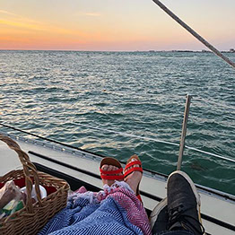
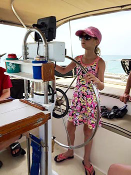
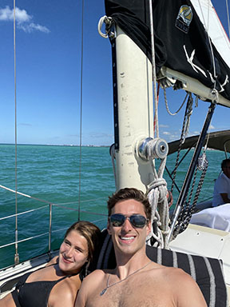
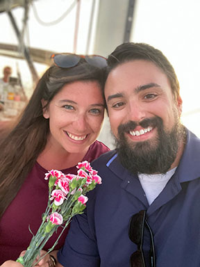

Preguntas frecuentes
P: Bien, ¿cómo hago mi reserva?
R: Complete un formulario de solicitud en este sitio o llame o envíe un mensaje al 941-346-7245 (SAIL) a cualquier hora, 24/7. Su reserva no está confirmada hasta que le respondamos. Adaptaremos los detalles a sus necesidades.
P: ¿Qué formas de pago aceptan?
R: Aceptamos Venmo, Zelle, tarjetas de crédito y débito, cheques o efectivo. No se necesita depósito.
P: Quiero comprar un certificado de regalo. ¿Cómo funciona?
R: Los certificados de regalo se piden por teléfono o por correo y son válidos por un año. Son un regalo de Navidad perfecto. Algunas personas los atan a una gorra o a un velero de juguete y los regalan en un aniversario o cumpleaños. Los agentes inmobiliarios suelen comprarlos como regalo al cerrar una venta.
P: ¿Y si el clima no ayuda? ¿Cuál es su política de cancelación?
R: Como NO cobramos depósito, no hay problema si cambian sus planes o si el clima se los cambia. Pero no espere a que salga el sol para reservar. Aunque a veces puede navegar con nosotros el mismo día que llama, y siempre vale la pena intentarlo, tomamos reservas con semanas y meses de anticipación, y algunas fechas ya están reservadas para los próximos años.
P: ¿Qué experiencia de navegación tienen el capitán y la tripulación?
R: El capitán Tim Solomon, Master Captain de la Guardia Costera de EE. UU., navega junto a su esposa Jan desde 1975. Aprendieron el oficio en la secundaria, en el Sarasota Sailing Squadron. Muchos barcos después, su experiencia internacional incluye Australia, el Caribe, la costa de Sudáfrica y más de 3,000 millas en el océano Pacífico. Ahora Tim y Jan han vuelto a sus raíces. El Key Breeze navega frente al parque de veteranos junto a la bahía, que lleva el nombre del padre de Jan, el capellán J.D. Hamel. Key Sailing ES el equipo de casa.
P: ¿Puedo tomar el timón?
R: Como Embarcación Educativa Oficial del condado de Sarasota, ofrecemos clases de vela gratis, si las pide, a invitados de todas las edades. Se han impartido clases en el programa de educación para adultos del condado de Sarasota. En nuestros paseos más largos se entregan certificados de navegación.
P: ¿Puedo simplemente relajarme?
R: Adaptamos la ruta, los bocadillos, la música y la experiencia, incluso en charters de grupo. Ya sea que quiera saber de bienes raíces o privacidad al atardecer, en Key Sailing lo importante es cumplir SUS expectativas, ¡así que díganos cuáles son!
P: Mis amigos quieren navegar al sol, pero yo necesito sombra. ¿Tienen las dos cosas?
R: Solo la zona de sombra bajo el toldo bimini del Key Breeze tiene espacio para que TODOS los invitados se sienten cómodos, si así lo desean. Si prefiere el sol, nuestra embarcación tiene almohadas, pufs y cojines mullidos con respaldo para relajarse en la proa y tomar el sol. Puede moverse libremente durante el crucero y, como no llenamos el yate, hay más espacio para moverse al sol y a la sombra.
P: ¿Podemos comer en el yate?
R: ¡Sí! Tenemos dos refrigeradores, hielo, vasos, platos de plástico, cubiertos y una mesa plegable junto al timón, a la sombra. Puede traer su almuerzo o pedirnos opciones locales de comida para llevar y catering para que la experiencia sea única. Los pasteles de cumpleaños son bienvenidos, ¡pero sin velas, por favor! Si nos avisa con tiempo, podemos ofrecer algunas sorpresas de cumpleaños o aniversario, ¡e incluso cantarle al festejado con la guitarra a bordo! Además, no necesita comprar agua embotellada, refrescos ni chocolates. Están incluidos.
Un consejo: hemos notado que los invitados que vienen por primera vez suelen traer hasta lo que no necesitan. Los que repiten, sobre todo los que han navegado con nosotros más de un par de docenas de veces, suelen subir a “su yate” solo con una sonrisa y una cámara o un celular.
P: ¿Entonces los bocadillos están incluidos? ¿Se permiten bebidas alcohólicas en el Key Breeze?
R: Servimos refrescos, té helado, limonada y agua embotellada. Hasta hemos comprado café para los paseos de la mañana y adaptado la selección de bocadillos. Todos los paseos incluyen CHOCOLATE. Puede traer cualquier otro bocadillo que desee, incluidas bebidas alcohólicas. Tenemos destapadores y copas.
Puede traer vino blanco, champán o cerveza, pero el Key Breeze es una embarcación para relajarse, no un lugar para emborracharse. Con ese espíritu, los licores fuertes no son apropiados para un charter de vela. Además, el vino tinto puede mancharlo todo, así que ya no se permite. El Key Breeze es también una embarcación “libre de humo”.
P: ¿Y si tengo niños pequeños?
R: A Jan le encantan los niños y tiene un posgrado en educación. Hay una zona tipo corralito junto al timón, a la sombra, y el capitán Tim a menudo les enseña a navegar a los pequeños mientras sus padres prueban los chocolates. Hay chalecos salvavidas de todas las tallas. En el Key Breeze la seguridad es lo primero. Tim y Jan ya son abuelos, ¡y se nota en su cariño por los pequeños a bordo! Los paseos de la mañana son ideales para familias con niños pequeños.
P: ¿Hay baños?
R: Tenemos dos baños a bordo y, como dice el capitán, "Two heads are better than one" (dos cabezas piensan mejor que una; en un barco, "head" también significa baño).
P: ¿Me voy a marear?
R: ¡Es poco probable! Una de las razones principales es que los veleros monocasco tienen una quilla pesada bajo el casco que da una estabilidad increíble. El Key Breeze lleva 8,500 libras de plomo en la quilla, bajo la línea de flotación. Además, solo salimos al golfo si lo pide, y podemos pasar todo el día con la agradable brisa de la bahía de Sarasota si así lo desea (de hecho, la mayoría de los invitados prefiere los paseos por la bahía).
P: ¿Hay una edad máxima para navegar?
R: Se puede disfrutar de la vela a cualquier edad. Llámenos si tiene alguna limitación física o preocupación de salud. 941-346-7245.
P: ¿Es verdad que la llave de la ciudad de Sarasota está a bordo del Key Breeze?
R: Sí. El padre de Jan, el capellán J. D. Hamel, recibió una llave oficial de la ciudad de Sarasota. El parque de veteranos junto a la bahía, frente a Marina Jack, lleva su nombre, y Fruitville Road se cerró para su cortejo fúnebre en 1997. La madre de Jan fue violinista de la Florida West Coast Symphony Orchestra, donde Jan siguió sus pasos con la flauta. La familia Hamel llegó a Sarasota en 1960 y durante más de 60 años ha ofrecido la invocación y la bendición en eventos de la ciudad. El capitán Tim es ministro ordenado y con licencia, y tiene un día oficial en su honor por su trabajo con organizaciones benéficas locales. Usted navega en el patio de casa de Tim y Jan.

P: ¿De verdad el capitán Tim habla español? ¿De dónde es?
R: El capitán Tim nació en el Medio Oeste, pero creció en Sudamérica y habla español como nativo. Jan también habla español con fluidez. A los dos les gusta aprender otros idiomas cuando el tiempo y los viajes lo permiten.




P: ¿Me voy a mojar o necesito toalla?
R: El Key Breeze es un yate de aguas profundas, así que no anclamos durante su charter. Somos una embarcación de crucero hecha para "navegar sin sobresaltos". Aunque no va a nadar ni mojarse, algunos invitados prefieren poner su propia toalla sobre los cojines de la proa cuando toman el sol.